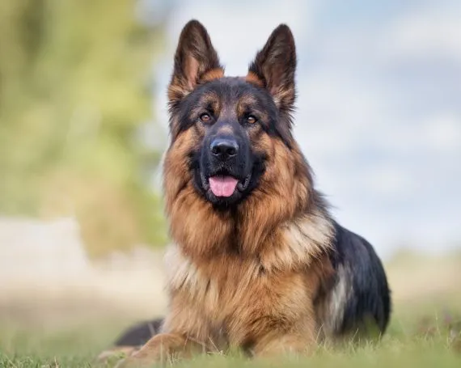

Pastor Alemán
El pastor alemán, también conocido como ovejero alemán, es una raza de perro pastor originaria de Alemania de tamaño mediano a grande. La raza es relativamente nueva, ya que su origen se remonta a 1899. Forman parte del grupo de pastoreo, ya que fueron perros desarrollados originalmente para reunir y vigilar ganado.